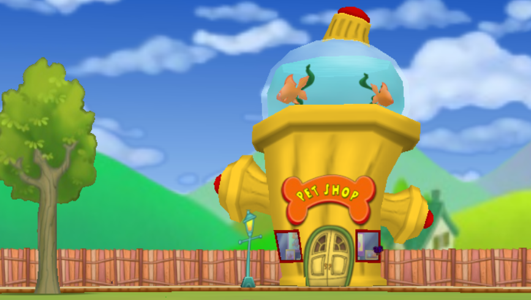

Have you ever found yourself wanting to have a fluffy companion to greet you at the estate, and assist you and your friends in cog battles? Well I have the best news for you! Doodles are the pets of Toontown and a toons best friend. Any toon can adopt a doodle of their choice, as long as they have enough jellybeans!
To adopt a doodle, a toon must go to any of the pet shops located in each playground (excluding for Chip N' Dales Acorn Acres). A pet shop resembles a giant fire hydrant with a massive fish tank on top, displayed below.
Depending on which Pet Shop a toon adopts their doodle from, they will get many randomized doodle variations from colors and spots to tails, ears, noses, and hair. There is no pattern to what doodles will be available, it is just the luck of the draw! These doodle options change everyday, so if you are not satisified with your choices, come back another day! However, if you see a doodle you love, do not hesitate because it will be hard to find that same doodle again. If a Toon is not satisfied with the purchased doodle, they can return their current doodle without a refund.
Additionally, depending which playground a toon chooses to purchase their doodle determines the overall quality of the doodle. For example, a doodle adopted in Toontown Central will not have as good of traits as a doodle adopted in Donald's Dreamland. With that being said, the higher quality doodles cost significantly more jellybeans.
After adopting a doodle, the doodle will live at the toons estate. And if other toons on the account also have doodles, they will all live in the estate neighborhood and will all be available for interaction for any toon thats logged in. When a toon arrives at their estate, the doodles tags will appear on the screen, just like other online toons name tags appear. Upon clicking the doodle's name tag, a small box will show up, similar to when on another Toon's name is clicked. This box shows a doodles information such as its tricks tab, and the ability to call, feed, and pet their doodle. On top of that, a doodle's current mood is displayed. A toon's doodle also appears on the friends list so they can check on their doodle at any given time.
Doodles can be trained to do tricks for toons, which can heal a set amount of laff depending on the trick. These tricks can be done simply at a toons estate. They can also be called into a cog battle as an SOS to perform a trick to heal all the toons partaking in the battle. Training a trick boosts how much laff a trick can restore, and reduces the chance of the doodle getting confused. Trick training can be tracked on the doodles info card, by clicking on the Pet Details arrow ◀.
Every toon starts out with the trick phrase "Jump!". The rest of the trick phrases can be purchased in Clarabelle's Cattlelog. To use a trick phrase, open up Speedchat and go to PETS then TRICKS. There you can find a list of the trick phrases a toon has available. Shout the trick around your doodle and see if they perform! The more they perform, the better they will be and the trick xp goes up. Doodles can become tired after doing tricks, signaled by the 'ZZZ' cloud icon, and will need to take a break. To speed up the resting process and to make the doodle feel happy, a toon can feed it with jellybeans, and praise it by saying "Good boy!" or "Good girl!".
Please note that doodle trick training is a lengthy task and requires a lot of patience. Each trick bar has to be filled up as many times as the original laff restore to be completely maxed. For example, the Jump trick bar has to be filled 5 times and the Speak trick bar has to be filled 11 times.
The following table lists all the trick phrases and their laff restore ranges:
| Doodle Trick | Laff Points Restored |
|---|---|
| Jump | 5 - 10 |
| Beg | 6 - 12 |
| Play Dead | 7 - 14 |
| Rollover | 8 - 16 |
| Backflip | 9 - 18 |
| Dance | 10 - 20 |
| Speak | 11 - 22 |